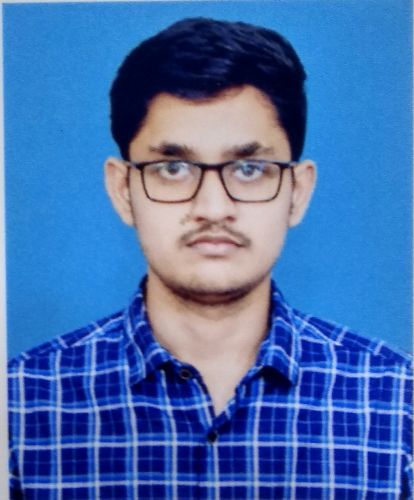

|  | VISHNU ARAVIND S EMAIL : vishnuaravind.mech@gmail.com MOBILE: +91 9894449813 |
| COURSE | NAME OF THE INSTITUTION | UNIVERSIY/BOARD | YEAR OF PASSING | PERCENTAGE/CGPA |
|---|---|---|---|---|
| B.E, Mechanical Engineering | Velammal Engineering College, Chennai | Anna University | 2020 | 7.4 |
| H.S.C. | Sishya matriculation higher secondary school, Thiruvannamalai |
State Board | 2016 | 82 | S.S.L.C. | Sishya matriculation higher secondary school, Thiruvannamalai |
State Board | 2014 | 94.8 |
| Father’s Name : | SOUNDARARAJAN |
| Date of Birth : | 28-04-1999 |
| Languages known: | Tamil and English. |
| Address : | 4/752A, Senguntharst, Kalasapakkam,Tiruvanamalai, Tamil Nadu. |
| Passport number : | U1715458 |